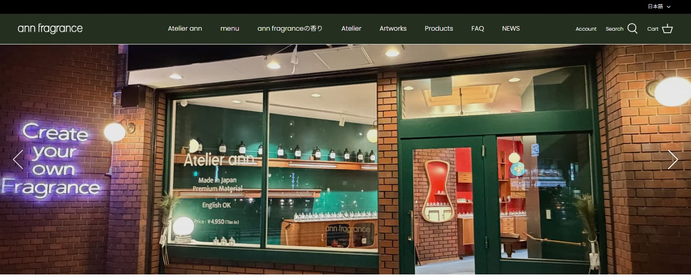
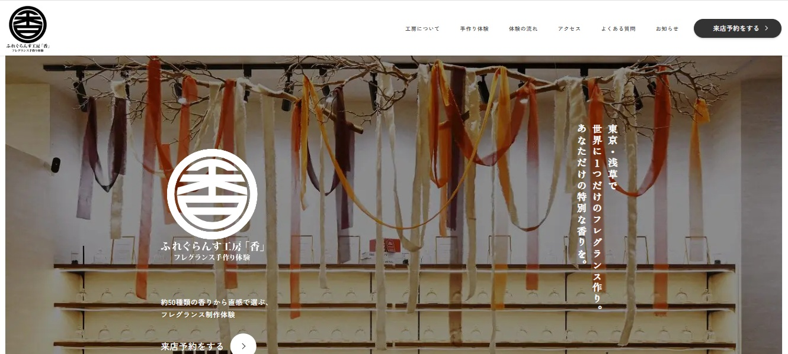

DOCUMENT 02
マーケットリサーチ
3C分析
3C分析の前提整理 必須
Customer・Competitor・Companyを整理する前提情報
分析対象
inimu集客増を目指した来店理由形成型ホームページ再編。浅草での香り体験・商品購入・日本のものづくりとの出会いを、来店前接点から体験、EC再購入までつなぐ構想を分析対象とする。
主なターゲット
【メイン】30代女性・感度層
【サブ①】国内外観光客
【サブ②】カップル・友人の2名来店層
主要比較軸
Customerでは顧客像・ニーズ・行動・市場トレンド、Competitorでは浅草周辺の主要競合、Companyではinimuが持つ価値・強み・リソース・課題を整理する。
Customer（顧客） 必須
ターゲット顧客の特徴・ニーズ・行動パターン・市場トレンド
| 項目 | 内容 |
|---|---|
| ターゲット特徴 | 30代女性・感度層（会社員・フリーランス） 日本のものづくり・体験に関心が高い |
| ニーズ・悩み | 自分に合う香りを失敗せず選びたい 特別感・背景のある商品や体験を求める |
| 行動パターン | SNS・口コミ・Googleで事前検索し比較検討 観光や週末に来店、体験・土産を同時に検討 |
| 市場トレンド | 体験型消費の拡大 フレグランス市場の成長 インバウンド・Made in Japan需要の増加 |
Competitor（競合） 必須
競合サービスの特徴・強み・弱み・差別化ポイント
| 項目 | 内容 |
|---|---|
| 競合特徴 | ann：世界観・高級感重視 香：体験・価格・予約の分かりやすさ よろし化粧堂：低価格・観光土産特化 |
| 強み | ann：ブランド力・空間価値 香：分かりやすさ・即予約性 よろし：手軽さ・価格 |
| 弱み | ann：体験以外の来店理由が弱い 香：ブランド性・差別化が弱い よろし：体験・高付加価値が弱い |
| 差別化ポイント | inimuは「体験＋商品＋文化背景」を一体で提供 来店理由を複合的に形成できる点で差別化 |
Company（自社） 必須
自社が提供できる価値・強み・活用資源・課題
| 項目 | 内容 |
|---|---|
| 提供価値 | 香り体験・商品・日本のものづくり背景を一体で提供 |
| 独自の強み | OEM実績19年の調香力 日本素材・文化理解 浅草立地 体験と物販の両立 |
| 活用リソース | ブランド群・商品ラインナップ 体験運営ノウハウ 観光地立地 既存顧客データ |
| 弱み・課題 | 目的来店が弱い HP導線がEC寄り 自社予約・EC再購入導線が未整備 |
SWOT分析
SWOT分析の前提整理 必須
inimu概要・ターゲット・競合を整理
| 項目 | 内容 |
|---|---|
| inimu概要 | 浅草で香り体験・商品購入・日本のものづくりとの出会いを提供し、来店前接点から体験、EC再購入までつなぐ来店理由形成型ホームページ再編。 |
| ターゲット | 【メイン】30代女性・感度層 【サブ①】国内外観光客 【サブ②】カップル・友人の2名来店層 |
| 競合 | ann fragrance 浅草アトリエ ふれぐらんす工房「香」 D.Anda 上野店 よろし化粧堂 仲見世店 |
SWOT分析マトリクス 必須
Strengths（強み）・Weaknesses（弱み）・Opportunities（機会）・Threats（脅威）
| プラス要因 | マイナス要因 | |
|---|---|---|
| 内部環境 | Strengths（強み） OEM実績19年の調香・商品開発力 日本素材と香文化への深い理解 浅草立地と体験型ショップ運営 | Weaknesses（弱み） inimuとKYARA INNOVATEの関係が分かりにくい 目的来店が弱い 自社HP予約・EC再購入導線が弱い |
| 外部環境 | Opportunities（機会） 体験型消費と国内フレグランス市場の成長 浅草インバウンド回復 Made in Japan需要の拡大 | Threats（脅威） 浅草・上野周辺の競合増加 EC代替・価格比較リスク 観光需要変動とじゃらん依存 |
STP分析
Segmentation（市場細分化） 必須
市場をどのような基準で分類するか
| 項目 | 内容 |
|---|---|
| 市場細分化 | ①感度層・国内女性 ②観光客（国内外） ③カップル・友人ペア ④ギフト購入層 |
| セグメント① | 感度層・国内女性 |
| セグメント② | 観光客（国内外） |
| セグメント③ | カップル・友人ペア |
| セグメント④ | ギフト購入層 |
Targeting（ターゲット選定） 必須
どのセグメントを狙うか、その理由
| 項目 | 内容 |
|---|---|
| メインターゲット | セグメント① 感度層・国内30代女性 |
| 選定理由 | ①自社コア年代・男女比と一致 ②失敗回避ニーズ＋文化背景ニーズが自社強みと整合 ③リピート・EC再購入に繋げやすい層 ④ブランドの世界観構築の中心軸になる |
| サブターゲット | サブ①: 観光客（国内外） サブ②: カップル・友人ペア |
Positioning（ポジショニング） 必須
競合に対してどのような位置づけを取るか
| 項目 | 内容 |
|---|---|
| ポジショニング | 「日本素材×浅草限定×背景が語れる」唯一のポジションを取る。 |
| 競合に対する位置づけ | ann fragrance（体験型）は体験はあるが日本文化背景の深掘りが弱い。NOSE SHOP（セレクト型）は品揃え型であり、inimuは日本素材特化で対抗する。Le Labo・DIPTYQUE（ブランド系）は世界観は強いが、浅草・日本素材の文脈がない。inimuは「日本素材×浅草限定×背景が語れる」唯一のポジションを取る。 |
| ターゲットへのメッセージ | 日本の物語を纏う香りを、浅草で、あなただけの一本に。 |
| コア価値 | 日本素材×トレーサビリティ×浅草立地の文化体験型フレグランスブランド。 |
| 独自の特徴・差別化要素 | ①日本素材特化（ヒノキ・ゆず・伽羅等） ②OEM実績19年・ACTUS等協業による信頼性 ③植樹活動による社会性 ④浅草限定・季節限定商品の設計余地 |
4P / 4C 分析
4P・4C分析 必須
| 4P（売り手視点） | 内容 | 4C（買い手視点） | 内容 |
|---|---|---|---|
| Product （製品） | 日本素材を活かした香り商品＋香り体験（WS）＋背景ストーリー | Customer Value （顧客価値） | 自分に合う香りを失敗せず選べる＋特別感のある体験と土産価値 |
| Price （価格） | 中価格帯〜やや高価格帯（体験・商品ともに価値訴求型） | Cost （顧客コスト） | 価格だけでなく「納得感」「特別感」「体験価値」で判断 |
| Place （流通） | 浅草実店舗＋EC＋外部予約（じゃらん） | Convenience （利便性） | 観光中でも立ち寄れる立地＋事前比較・選択のしやすさが重要 |
| Promotion （販促） | ブランド・商品・体験の訴求＋SNS・観光導線依存 | Communication （対話） | 口コミ・SNS・比較検討を重視し、選び方や背景説明を求める |
競合サイト分析
競合サイト 1 必須
サイト名・URL・スクリーンショット・分析
サイト名
ann fragrance 浅草アトリエ
URL
https://annfragrance.com/
| 観点 | 内容 |
|---|---|
| 第一印象 | 高級感・世界観重視の体験特化サイト。 |
| 良い点 | デザイン: 余白・統一感でブランド力が高い。 ビジュアル: 写真で体験イメージが伝わる。 導線: 体験内容・価格・予約がシンプル。 ブランディング: 専門性・品質で差別化できている。 |
| 改善余地 | 来店理由: 体験以外の理由が弱い。 比較検討: 初心者向け情報が少ない。 文化性: 浅草・日本文脈が弱い。 回遊性: サイト深掘りが弱い。 |
| inimuで取り入れる要素 | 世界観統一: TOP〜全体のデザイン統一。 高品質写真: 体験・店内の魅力強化。 シンプル導線: 体験ページを分かりやすく。 |
| 結論 | ann: 体験に行く店。 inimu: 体験＋商品＋文化で「行く理由を作る店」。 |
スクリーンショット

競合サイト 2 必須
サイト名・URL・スクリーンショット・分析
サイト名
ふれぐらんす工房「香」
URL
https://fragrance-koubou-kaori.com/
| 観点 | 内容 |
|---|---|
| 第一印象 | 体験内容・価格が分かりやすい「体験予約特化型サイト」。 |
| 良い点 | 分かりやすさ: 体験内容・料金・時間が明確。 導線: 予約までの流れがシンプル。 比較性: コース・価格が整理されていて選びやすい。 実用性: 「とりあえず予約」がしやすい構造。 |
| 改善余地 | 世界観: ブランド性・デザイン性が弱い。 差別化: 他店との違いが伝わりにくい。 文化性: 日本素材・背景ストーリーが弱い。 物販連動: 商品・土産への接続が弱い。 |
| inimuで取り入れる要素 | 価格の明確化: 体験ページで料金・時間を明示。 シンプル導線: 予約まで迷わせない構造。 比較しやすさ: コース・対象者の整理。 |
| 結論 | 香: 迷わず予約できる体験特化店。 inimu: 選ぶ理由がある体験＋商品＋文化の店。 |
スクリーンショット

競合サイト 3 必須
サイト名・URL・スクリーンショット・分析
サイト名
よろし化粧堂 仲見世店
| 観点 | 内容 |
|---|---|
| 第一印象 | 観光土産に特化した「低価格・手に取りやすい和コスメ店」。 |
| 良い点 | 価格: 低価格帯で気軽に購入できる。 分かりやすさ: 商品が直感的に選びやすい。 土産適性: 浅草土産として分かりやすい。 デザイン: 大正ロマン風で観光地との親和性が高い。 |
| 改善余地 | 高付加価値: 特別感・プレミアム感が弱い。 体験性: 体験・ストーリー性がない。 差別化: 他の土産店との差が出にくい。 深い選択: 香りや背景で選ぶ要素が弱い。 |
| inimuで取り入れる要素 | 土産導線: 「浅草土産」カテゴリの明確化。 価格の入口設計: 初心者向け・低価格商品の提示。 分かりやすさ: 直感的に選べる商品分類。 |
| 結論 | よろし化粧堂: 手軽に買える観光土産店。 inimu: 特別感・体験・背景で選ぶ店。 |
スクリーンショット